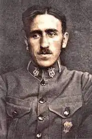
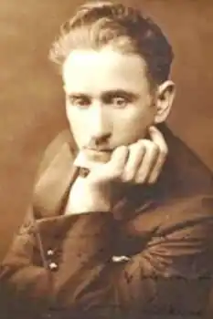

Михайло Гайворонський народився 15 вересня 1892 р. в м. Заліщики. З раннього дитинства виявляв інтерес до навчання, а особливо до музики. Жителька Заліщиків Марія Українець згадувала, як "Михась часто сидів під хатою і читав книжки. Був він на вигляд щупленьким і скромно одягнутим. Коли хлопець не читав, то був завжди якийсь задуманий".
У Заліщиках М. Гайворонський закінчив 7 класів, а потім учительську семінарію. Пригадуючи юні літа, він писав: "Цимбали були моїм першим інструментом, а вчив мене циган Місько. Мій батько грав на сопілці. Сорок літ із чубком минуло з того часу, а я досі чую батькову сопілку та свої цимбали і не в силі відірвати думки від спомину…"
У 1912 р. М. Гайворонський почав працювати вчителем у селі Зашкові недалеко від Львова. Звідси Михайло доїжджав до Львова і в Музичному інституті ім. Лисенка студіював музику. Також займався самоосвітою, студіюючи польські та німецькі підручники. У 1914 р. М. Гайворонський на великому концерті у Львові, присвяченому 100-річчю з дня народження Т. Шевченка, диригував учительським хором. Тоді й прозвучали його перші твори, зокрема "Ідіть" – композиція для чоловічого хору на слова Олександра Олеся. Композицію він підписав псевдонімом" Орест Тин". Перша світова війна перервала вчителювання і навчання в інституті. Михайло Гайворонський служив у запасній частині легіону Українських Січових Стрільців. Кіш займався набором поповнення на території Галичини. Поряд з бойовою підготовкою в Кадрі молоді галичани співали у стрілецькому хорі, яким керував капельмейстер оркестру, автор численних пісень М. Гайворонський. Організатор військових оркестрів у 1914 – 1917 рр., старшина УСС, він написав багато пісень на тексти Богдана Лепкого, Петра Карманського, Юрія Шкрумеляка, Романа Купчинськото, Миколи Голубця, Юрія Назарака. Часто він і сам писав поетичні твори. Величаво звучить похідна пісня М. Гайворонського "Йде січове військо до бою", написана в 1916 р. Популярність здобула також його хорова пісня "Ой, впав стрілець", складена в Тудинці над Стрипою у 1916 р. Автор понад двох десятків стрілецьких пісень, М. Гайворонський свої мелодії творив під враженням хвилі гарячих поривань, щирих синівських почуттів. Багато пісень були улюбленими серед стрільців й дуже часто співаними. Серед них "Ой, нагнувся дуб високий"(слова М. Голубця), "Ой, там при долині" (слова І. Луцика), "Їхав стрілець на війноньку" і "За рідний край" (слова Р. Купчинського), "Ой, казала мати"(слова і мелодія М. Гайворонського), "Нема в світі" (слова Ю. Назарака). Стрілецькі пісні швидко здобули собі любов і популярність. Музичні твори М. Гайворонського були опубліковані 1915 р. в "Стрілецькій антології" та пісеннику "Співанки УСС". У 1916 р. вийшов збірник "Стрілецькі бойові пісні" ("З життя Українських Січових Стрільців") в обробці М. Гайворонського. Його двадцять стрілецьких пісень вміщено у збірці "Сурма", яку видавництво "Червона Калина" опублікувало в 1922 р. Ще сім пісень увійшло до композиції "Стрілецьким шляхом", виданої в 30-і роки. Після війни М. Гайворонський працював учителем співу в приватній жіночій школі сестер Василіянок у Львові. Тоді в його обробці вийшло сім випусків українських пісень, які критика сприйняла прихильно. У збірник увійшли пісні "Зелене жито", "Ой, ти знав, нащо брав", "Пасла дівка лебеді", "Ой, вирву я з рожі квітку", "Краєм Дунаєм дівчина йшла", "Ой, чия то черешенька", "Про Нечая", а також вірш Т. Шевченка "Садок вишневий", який М. Гайворонський поклав на музику. У Львові М. Гайворонський керував хором "Боян". Матеріальне становище композитора у цьому місті було дуже важким. Заробітку не вистачало на прожиття. У 1923 р. М. Гайворонський виїхав до США. У Нью-Йорку він працював учителем музики в Українській музичній школі, організував хор і оркестр. Одночасно студіював в Університеті Колумбія. Прийнятий на перший курс університету через півроку праці, він заслужив визнання і грошову винагороду імені Мозенталя, яку там дають раз на два роки за оригінальні композиції. М. Гайворонський був першим українцем, який отримав таку високу нагороду. Капельмейстерської майстерності продовжував вчитися в Американському оркестровому товаристві. У 1929 р., з метою піднесення української музичної культури та її репрезентації, він вирішив створити в Америці українську консерваторію. Його мрія скоро здійснилася. В березні 1930 р. в Елізабеті відбувся перший концерт, на якому співали сім хорів (30 співаків). У 1930 р. в М. Гайворонського загострився туберкульоз. Цю хворобу він набув ще в роки Першої світової війни. Вилікувати її було неможливо. В 1933 р. М. Гайворонський видав композиції до українських народних пісень "Полісся". 1936 р. він опублікував свою працю "Наша музика в Америці", яка увійшла в пам'ятну книгу, присвячену 40-річчю Українського Народного Союзу. Особливо плідним як для композитора для нього був 1938 р. Тоді М. Гайворонський опрацював оркестрові, хорові та камерні твори, низку циклів народних пісень та церковних творів, видав ще два скрипкових твори – "Прелюдія" та "Сонета" для скрипки з фортепіано. Через рік вийшли Канти на мішаний та однорідний хор, які зредагував і опрацював М. Гайворонський. Помер композитор 12 вересня 1949 р., похований у Нью-Йорку. 1992 р. в Заліщиках відкрито пам'ятник М. Гайворонському.